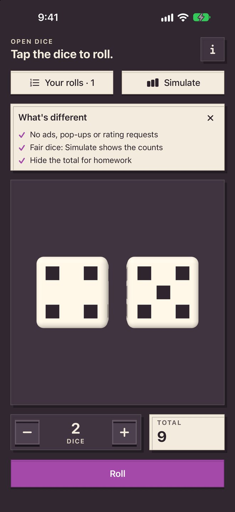
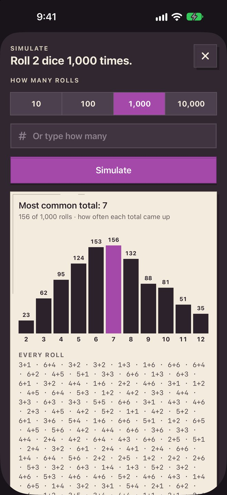
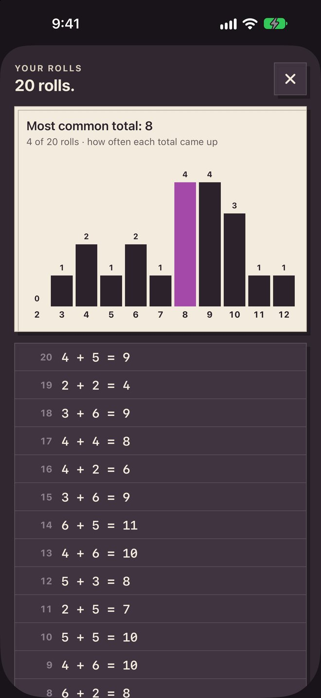

“lately the ads have contained inappropriate images to be used with children”
What Open Dice does instead
No ads of any kind.
Open AppCo app #9
Just dice. Roll up to 12, hide the total, simulate a million rolls.
Live on the App Store. Collect feedback and maintain.
The actual app



60-second device check
On a real iPhone: launch from the Home Screen, roll 12 dice, switch to 2, hide and show the total, open Your rolls, and simulate 1,000 rolls.
Why this app exists
We read 2,555 App Store reviews of 12 dice apps. These complaints kept coming up.
“lately the ads have contained inappropriate images to be used with children”
No ads of any kind.
“This app asked me to rate it after every few rolls.”
Dice Roller ► on the App Store
No rating requests or pop-ups.
“It rolls 6, 50% of the time.”
Every die uses the iPhone's secure random generator, and Simulate shows you the counts.
“half of the dice will occasionally land outside of the screen”
Dice Roller ► on the App Store
Dice land face up in a fixed grid, always readable.
“I'm using tape to cover the total number because my 1st grader is using the app for homework.”
Dice Roller ► on the App Store
One tap hides the total.
“the app still wont total dice rolls without paying an additional fee”
Dice Roller: Shake & Roll on the App Store
The total, 12 dice and Simulate are all included.